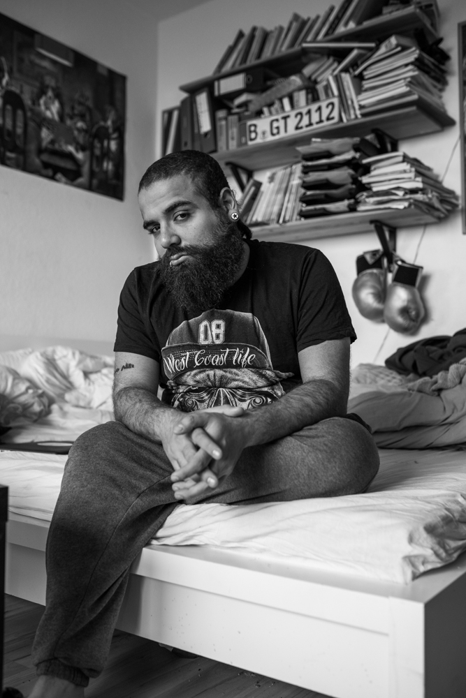

Firas Alschater

My name is Firas Alshater, I am from Syria and I am 24 years old. I was born in Homs, but grew up in Damascus. I studied acting for theater. I did that for two years. In 2011 the revolution began in Syria, and after that I couldn’t continue with my studies. It was a problem because I was against Assad and this was reason enough to send you to jail, and if you were sent to jail they would kick you out from theuniversity. I worked hard to get my place to study as an actor. In Syria we always need what they call “Vitamin B”, which means you need to have a good contact in the army or in the security services who will support you to get what you want. I had to work really hard because I didn’t have that. In 2011, when the revolution started, it was clear that I had to do something, that I couldn’t be silent. I saw the people dying in Dara’a and Homs. I went to the demonstrations to say together with the people protesting: Dzwe want freedom. “Nobody at that time was saying, “We want the Islamic State,” or anything like that. The people wanted democracy and freedom. But the media of the Syrian regime from the very first day said that these were terrorists with guns who were coming from the mosques. No one was like this. If you are asking for freedom and someone comes and arrests you, or kills your brothers, or your sons, or your father, no one gives you your rights, what are you going to do? How long will you stay silent? If no ay is ;, which means you need to have a good contact in the army or in the security services who will support you to get what you want. I had to work really hard because I didn’t have that. In 2011, when the revolution started, it was clear that I had to do something, that I couldn’t be silent. I saw the people dying in Dara’a and Homs. I went to the demonstrations to say together with the people protesting: Dzwe want freedom. “Nobody at that time was saying, “We want the Islamic State,” or anything like that. The people wanted democracy and freedom. But the media of the Syrian regime from the very first day said that these were terrorists with guns who were coming from the mosques. No one was like this. If you are asking for freedom and someone comes and arrests you, or kills your brothers, or your sons, or your father, no one gives you your rights, what are you going to do? How long will you stay silent? If no ay is, which means you need to have a good contact in the army or in the security services who will support you to get what you want. I had to work really hard because I didn’t have that. In 2011, when the revolution started, it was clear that I had to do something, that I couldn’t be silent. I saw the people dying in Dara’a and Homs. I went to the demonstrations to say together with the people protesting: Dzwe want freedom. “Nobody at that time was saying, “We want the Islamic State,” or anything like that. The people wanted democracy and freedom. But the media of the Syrian regime from the very first day said that these were terrorists with guns who were coming from the mosques. No one was like this. If you are asking for freedom and someone comes and arrests you, or kills your brothers, or your sons, or your father, no one gives you your rights, what are you going to do? How long will you stay silent? If no ay is I had to work really hard because I didn’t have that. In 2011, when the revolution started, it was clear that I had to do something, that I couldn’t be silent. I saw the people dying in Dara’a and Homs. I went to the demonstrations to say together with the people protesting: Dzwe want freedom. “Nobody at that time was saying, “We want the Islamic State,” or anything like that. The people wanted democracy and freedom. But the media of the Syrian regime from the very first day said that these were terrorists with guns who were coming from the mosques. No one was like this. If you are asking for freedom and someone comes and arrests you, or kills your brothers, or your sons, or your father, no one gives you your rights, what are you going to do? How long will you stay silent? If no ay is I had to work really hard because I didn’t have that. In 2011, when the revolution started, it was clear that I had to do something, that I couldn’t be silent. I saw the people dying in Dara’a and Homs. I went to the demonstrations to say together with the people protesting: Dzwe want freedom. “Nobody at that time was saying, “We want the Islamic State,” or anything like that. The people wanted democracy and freedom. But the media of the Syrian regime from the very first day said that these were terrorists with guns who were coming from the mosques. No one was like this. If you are asking for freedom and someone comes and arrests you, or kills your brothers, or your sons, or your father, no one gives you your rights, what are you going to do? How long will you stay silent? If no ay is I had to work really hard because I didn’t have that. In 2011, when the revolution started, it was clear that I had to do something, that I couldn’t be silent. I saw the people dying in Dara’a and Homs. I went to the demonstrations to say together with the people protesting: Dzwe want freedom. “Nobody at that time was saying, “We want the Islamic State,” or anything like that. The people wanted democracy and freedom. But the media of the Syrian regime from the very first day said that these were terrorists with guns who were coming from the mosques. No one was like this. If you are asking for freedom and someone comes and arrests you, or kills your brothers, or your sons, or your father, no one gives you your rights, what are you going to do? How long will you stay silent? If no ay is
here goes the caption